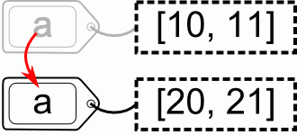

Modificación de variables
Cuando se asigna un nuevo valor a a una variable creada anteriormente, el valor de la variable será el nuevo valor almacenado, pero con respecto a los objetos (que son los que realmente almacenan los valores) pueden darse tres situaciones:
- que el objeto original sea inmutable y no pueda almacenar el nuevo valor. En este caso, la variable se asocia a un objeto distinto que contiene el nuevo valor.
- que el objeto original sea mutable, pero que no se modifique. En este caso, la variable se asocia a un objeto distinto que contiene el nuevo valor.
- que el objeto original sea mutable y pase a contener el nuevo valor. En este caso, la variable puede seguir asociada al mismo objeto.
Los tres ejemplos siguientes, ilustran estas tres situaciones. Los ejemplos están acompañados de dibujos en los que se muestran los objetos (con los valores que almacenan) y las variables (como etiquetas asociadas a los objetos).
- Objeto inmutable
Cambio de valor de una variable (objetos inmutables)
>>> a = 10 >>> a 10 >>> a = 20 >>> a 20
Puede ver la ejecución paso a paso de este ejemplo utilizando los iconos de avance y retroceso situados abajo a la derecha.

Cambio de valor de una variable (objetos inmutables) - Paso 1
>>> a = 10
Al asignar a la variable "a" el valor 10, Python crea el objeto "número entero 10" y le asocia la etiqueta "a". El objeto número entero es inmutable, es decir, no puede cambiar.

Cambio de valor de una variable (objetos inmutables) - Paso 2
>>> a = 10 >>> a 10
Al pedir el valor de la variable, se muestra el valor 10.
Cambio de valor de una variable (objetos inmutables) - Paso 3
>>> a = 10 >>> a 10 >>> a = 20
Al asignar a la variable "a" el valor 20, Python crea el objeto "número entero 20" y le asocia la etiqueta "a", que deja de estar asociada al objeto "número entero 10".
Cambio de valor de una variable (objetos inmutables) - Paso 4
>>> a = 10 >>> a 10 >>> a = 20 >>> a 20
Al pedir el valor de la variable, se muestra el valor 20.

- Objeto mutable que no se modifica
Cambio de valor de una variable (objetos mutables que no se modifican)
>>> a = [10, 11] >>> a [10, 11] >>> a = [20, 21] >>> a [20, 21]

Puede ver la ejecución paso a paso de este ejemplo utilizando los iconos de avance y retroceso situados abajo a la derecha.
Cambio de valor de una variable (objetos mutables que no se modifican) - Paso 1
>>> a = [10, 11]
Al asignar a la variable "a" el valor [10, 11], Python crea el objeto "lista [10, 11]" y le asocia la etiqueta "a". El objeto lista es mutable, es decir, puede cambiar.
Cambio de valor de una variable (objetos mutables que no se modifican) - Paso 2
>>> a = [10, 11] >>> a [10, 11]
Al pedir el valor de la variable, se muestra el valor [10, 11].
Cambio de valor de una variable (objetos mutables que no se modifican) - Paso 3
>>> a = [10, 11] >>> a [10, 11] >>> a = [20, 21]
Al asignar a la variable "a" el valor [20, 21], Python crea el objeto "lista [20, 21]" y le asocia la etiqueta "a", que deja de estar asociada al objeto "lista [10, 11]".
Cambio de valor de una variable (objetos mutables que no se modifican) - Paso 4
>>> a = [10, 11] >>> a [10, 11] >>> a = [20, 21] >>> a [20, 21]
Al pedir el valor de la variable, se muestra el valor [20, 21].
- Objeto mutable que sí se modifica
Cambio de valor de una variable (objeto mutable que sí se modifica)
>>> a = [10, 11] >>> a [10, 11] >>> a[0] = 20 >>> a [20, 11]
Puede ver la ejecución paso a paso de este ejemplo utilizando los iconos de avance y retroceso situados abajo a la derecha.
Cambio de valor de una variable (objeto mutable que sí se modifica) - Paso 1
>>> a = [10, 11]
Al asignar a la variable "a" el valor [10, 11], Python crea el objeto "lista [10, 11]" y le asocia la etiqueta "a". El objeto lista es mutable, es decir, puede cambiar.
Cambio de valor de una variable (objeto mutable que sí se modifica) - Paso 2
>>> a = [10, 11] >>> a [10, 11]
Al pedir el valor de la variable, se muestra el valor [10, 11].
Cambio de valor de una variable (objeto mutable que sí se modifica) - Paso 3
>>> a = [10, 11] >>> a [10, 11] >>> a[0] = 20
Al asignar al primer elemento de la lista (a[0]) el valor 20, Python modifica el primer elemento del objeto, que contiene ahora la lista [20, 11]. A diferencia de los ejemplos anteriores, no se crea un nuevo objeto, sino que se modifica el objeto ya existente.
Cambio de valor de una variable (objeto mutable que sí se modifica) - Paso 4
>>> a = [10, 11] >>> a [10, 11] >>> a[0] = 20 >>> a [20, 11]
Al pedir el valor de la variable, se muestra el valor [20, 11].